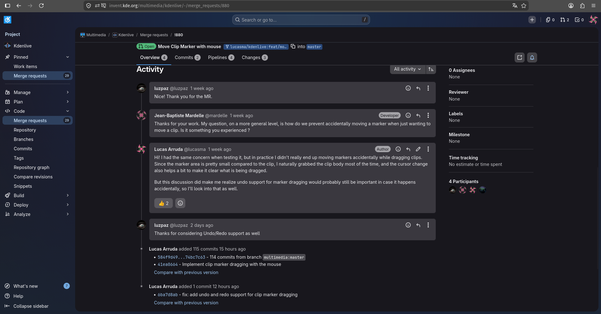

Diário de Bordo – Lucas
Disciplina: GERÊNCIA DE CONFIGURAÇÃO E EVOLUÇÃO DE SOFTWARE
Equipe: GCES 2026.1 – Kdenlive
Comunidade/Projeto de Software Livre: Kdenlive
Sprint: Sprint 3 (26/05/2026 – 08/06/2026)
Matrícula: 231035464
GitHub: @lucasarruda
KDE Invent: @lucasma
1. Resumo da Sprint 3 (26/05/2026 - 08/06/2026)
A Sprint 3 foi focada na evolução e refinamento da contribuição iniciada na Sprint 2 para o Kdenlive (BUG 406887). Diante dos feedbacks e revisões formais fornecidos pelos mantenedores da comunidade no Merge Request aberto, foi considerado prioridade consolidar e evoluir a funcionalidade existente em vez de abrir um novo MR para outra demanda. O escopo de trabalho concentrou-se em implementar melhorias de usabilidade e segurança para mitigar interações acidentais na linha de tempo, tendo como atividade principal a integração do suporte completo a comandos de desfazer e refazer para os marcadores de Clipe.
1.1 Acompanhamento e Feedback do MR #880
Dando continuidade ao acompanhamento do Merge Request #880, o mantenedor Jean-Baptiste Mardelle revisou o código e levantou uma questão a respeito da usabilidade do recurso. O ponto questionado abordava como o sistema evitaria que o usuário movesse um marcador sem querer quando a intenção real fosse apenas arrastar o clipe de vídeo na linha de tempo.
Na discussão técnica, foi esclarecido que, durante a fase de testes, essa situação apresentou baixa ocorrência pelo fato de a área de clique do marcador ser reduzida em comparação ao tamanho total do clipe, além do ponteiro do mouse mudar de formato para fornecer feedback visual. Apesar disso, o contraponto evidenciou a necessidade de implementar o suporte para desfazer e refazer a ação, estabelecendo uma camada extra de segurança para o usuário em cenários de arrasto acidental.

Figura 1: Discussão técnica com os mantenedores do Kdenlive1.2 Resolução de Conflitos
Antes de iniciar o desenvolvimento da nova demanda de Undo/Redo, o Merge Request #880 encontrava-se bloqueado para integração devido a conflitos de código com a branch master do repositório do kdenlive.
Para destravar o processo de integração contínua e garantir que o novo código fosse construído sobre a versão mais recente do software, foi realizado um processo manual de Git Rebase. Os conflito do arquivo Clip.qml foi analisado e mitigado, reajustando o histórico de commits de forma limpa e permitindo MR para a master.
1.3 Descrição da Nova Demanda (Evolução Técnica)
Para solucionar a demanda levantada pela comunidade, tornou-se necessária a inclusão da ação de arrasto dentro do histórico de comandos do Kdenlive. O objetivo técnico consistiu em conectar os eventos de movimento disparados pela interface em QML com a função pCore->pushUndo no C++. Dessa forma, qualquer modificação concluída na timeline passa a aceitar os comandos padrão de Ctrl+Z e Ctrl+Shift+Z, revertendo mudanças indesejadas de posição.
1.4 Contribuição
O desenvolvimento desta sprint estruturou-se em duas frentes de trabalho:
-
Criação de Nova Função no Controller C++: Desenvolvimento completo da função
TimelineController::moveClipMarker, incluindo sua assinatura e declaração comoQ_INVOKABLEno arquivo de cabeçalho. A função foi projetada do zero para receber o ID do clipe, o frame antigo e o frame novo, encapsulando regras de validação de limites comqBounde gerando as lambdas deundoeredopara registrar o movimento na pilha oficial de histórico através dopCore->pushUndo. -
Substituição de Chamada e Disparo de Estados no QML: Migração da antiga lógica da interface que chamava a função genérica de linha de tempo (
clipRoot.timeline.moveMarker). Adicionou-se o tratamento no fim do arrasto do mouse para invocar o novo método específico criado no C++ (clipRoot.timeline.moveClipMarker), garantindo que o disparo só ocorra se a posição final (newFrame) for estritamente diferente da inicial (startPosition).
1.5 Atualização do Merge Request
As novas modificações foram submetidas ao repositório oficial da KDE para atualização do Merge Request pendente. A mensagem de commit foi estruturada seguindo o padrão do projeto, preservando a tag BUG: 406887 no texto para manter todo o histórico de evolução indexado à issue original no Bugzilla.
 Figura 2: Merge Request da contribuição atualizado
Figura 2: Merge Request da contribuição atualizado
2. Atividades Realizadas
| Data | Atividade | Tipo | Referência | Status |
|---|---|---|---|---|
| 28/05/2026 | Monitorar feedbacks e responder dúvidas técnicas dos revisores no MR #880 | Outro | Link | Concluído |
| 01/06/2026 | Analisar a arquitetura do TimelineController no C++ e mapear o uso do pCore->pushUndo |
Estudo | Link | Concluído |
| 05/06/2026 | Executar Git Rebase com a branch master upstream para resolver conflitos que bloqueavam o MR | Gerência | Link | Concluído |
| 06/06/2026 | Implementar a nova função moveClipMarker no .h e .cpp da camada de controle C++ |
Código | Link | Concluído |
| 06/06/2026 | Refatorar o arquivo QML para substituir a chamada antiga do método pelo atual | Código | Link | Concluído |
| 06/06/2026 | Atualizar o MR oficial com o suporte completo a Undo/Redo | Documentação | Link | Concluído |
| 06/06/2026 | documentar diário de bordo da Sprint 3 | Documentação | Link | Concluído |
3. Maiores Avanços
-
Prática com Code Review em grandes projetos: Compreensão de como funciona o processo de discussão de um recurso com os desenvolvedores oficiais do software e adaptação do código com base em problemas de uso reais levantados por eles.
-
Uso do Padrão de Comandos (Command Pattern): Entendimento prático de como funciona a estrutura de histórico (Undo/Redo) em softwares complexos de edição de vídeo, lidando com pilhas de ações em C++.
4. Maiores Dificuldades
- Gerenciamento de Contexto no Histórico do Core: Compreender e depurar o fluxo do
markerModel->moveMarkersem conjunto com o barramento dopCore, garantindo que as referências de desfazer e refazer funcionassem perfeitamente sem quebrar o modelo de dados da linha de tempo.
5. Aprendizados
-
Evolução de Software Baseada em Feedback: Vivência real do ciclo de vida de uma contribuição open-source, em que uma solução de interface inicial precisa ser expandida após passar pela revisão dos mantenedores.
-
Segurança e Robustez em Interfaces: Percepção de que funcionalidades complexas de manipulação direta, como arrasto de componentes, exigem mecanismos transacionais acoplados ao motor de dados para garantir a integridade da aplicação e uma boa experiência ao usuário.
6. Plano Pessoal para a Próxima Sprint
- Acompanhar a avaliação final do código do MR #880.
- Realizar eventuais ajustes pontuais solicitados.
- Procurar novas issues para contribuição.
- Realizar documentação do diário de bordo da Sprint 4.
7. Histórico de Versões
| Versão | Descrição | Autor(es) | Data |
|---|---|---|---|
| 1.0 | Adicionando seção de introdução da Sprint3 | Lucas Mendonça | 06/06/2026 |
| 1.1 | Adicionando tabela de atividades realizadas | Lucas Mendonça | 06/06/2026 |
| 1.2 | Adicionando seção de aprendizados, dificuldade e avanços | Lucas Mendonça | 06/06/2026 |
| 1.3 | Adicionando seção de Plano pessoal e Imagens | Lucas Mendonça | 06/06/2026 |